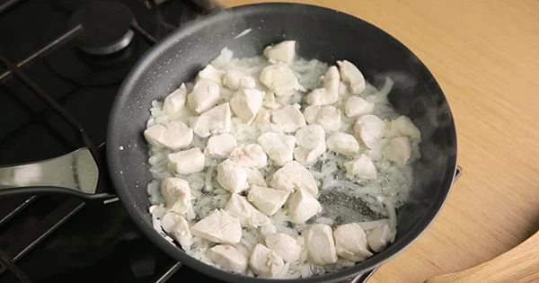

Tavuk Sote Tarifi İçin Malzemeler
- 2 yemek kaşığı sıvı yağ
- 300 gram tavuk göğsü (kuşbaşı doğranmış)
- 1 adet soğan
- 11 adet yeşil biber
- 1 adet yeşil biber
- 1 adet doğranmış domates
- 1 adet doğranmış domates
- 1 çay kaşığı karabiber
- 1 çay kaşığı pul biber
- 300 ml. sıcak su
- 1 çay kaşığı kuru nane
Tavuk Sote Tarifi Nasıl Yapılır?
-
Tavanın içerisine 2
yemek kaşığı sıvı yağı alın ve üzerine 300 gram kuşbaşı doğranmış tavuğu
ilave ederek yüksek ateşte soteleyin.
-

Pişen tavukların üzerine
1 adet doğranmış soğanı ilave ederek sotelemeye devam edin. 1
-
adet doğranmış yeşil
biber ve yarım adet doğranmış kapya biberi de ekleyin.
-
1 adet doğranmış
domatesi de tavanın içerisine aktarın.
-
Biraz suyunu çektikten
sonra sırasıyla birer çay kaşığı tuz, karabiber, pul biber ve kuru nane
ilave ederek güzelce karıştırın.
-
İyice pişince tavuk
sotenizi ocaktan alın ve servis edin. Tavuk sote hazır. Afiyet olsun!